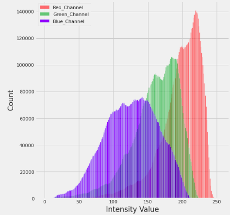
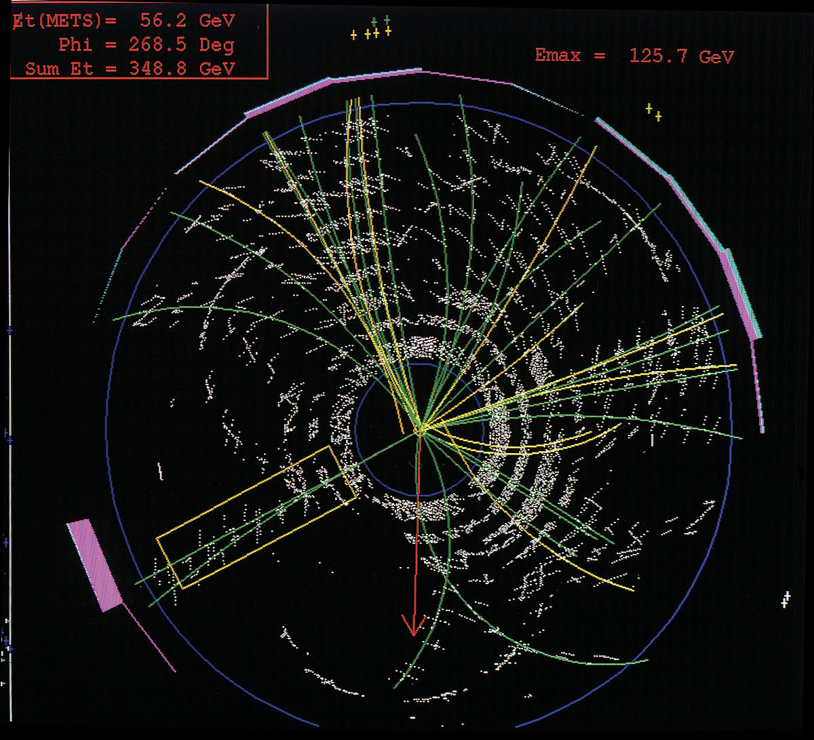

Projects
Leaf Disease Classification
This is the codebase which houses a Model, DataLoader, Augmentations and a Trainer Class (all written from Scratch in PyTorch) which detects Leafs with Diseases as a part of Cassava Leaf Disease Classification Challenge on Kaggle.
Due to data imbalance, noisy labels and variable image sizes, I had to use techniques such as Pseudo-Labelling and Bi-Tempered Logistic Loss, etc to get good score in Classification.

Pneumonia Detection from Chest X-Rays
I have made a Deep Convolutional Neural Network to classify between Chest X-Rays that have Pneumonia and those that donot.
In this task, I have achieved an accuracy of 84% on highly skewed dataset with noisy labels.
Along with the classification, I have also done very detailed Exploratory Data Analysis on the dataset and extracted usefull information from that.
I have also deployed a Web App that classifies any chest-xray into one of the 2 categories.

Melanoma Cancer Detection (SIIM-ISIC Challenge)
In this project, I performed extensive Exploratory Data Analysis, and trained a deep learning model (using PyTorch) to detect Melanoma Cancer from highly-imbalanced dataset of over 100GBs of size.
The target label (Malignant) consisted of only 1.8% of the entire dataset hence K-Fold Cross Validation along with Custom Loss functions and numerous augmentations were used.

Jet Hadron Collider Data Compression using Autoencoders
This project contains a Stacked Auto Encoder made in order to compress Hadron Jet Data from 4->3 Variables. I have used a Stacked Autoencoder of 3D Latent Dimensions. This way the SAE is decompressing 4D data into 3D thus reducing the space it takes.
The Model currently performs "OK-ish" - judging from the final loss.
The Reconstruction Loss (Mean Squared error measuring the distance between original data and the reconstructed data) after 350 epochs on training closes to about 0.03